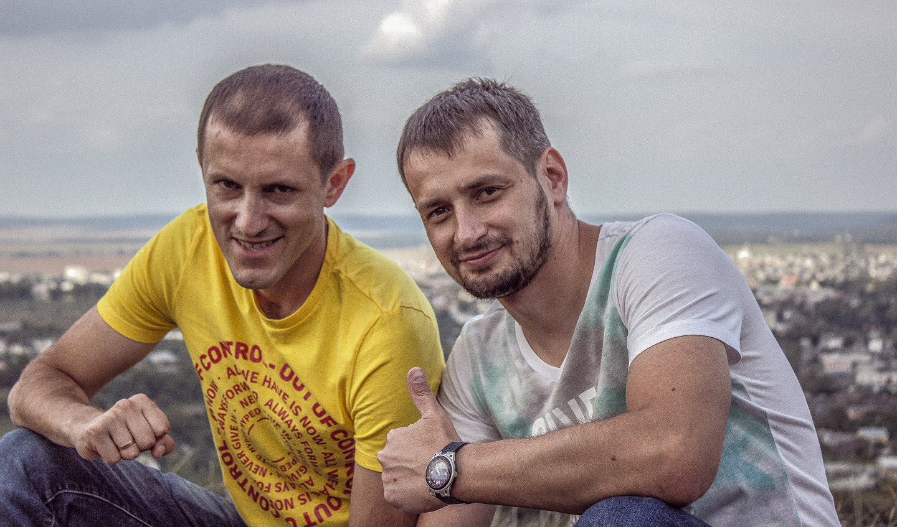
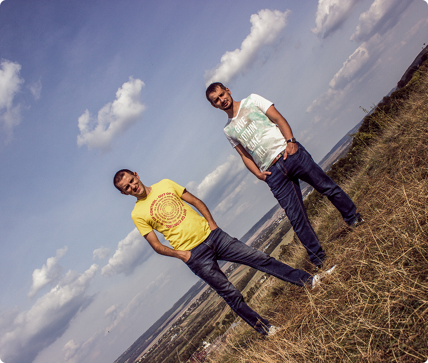
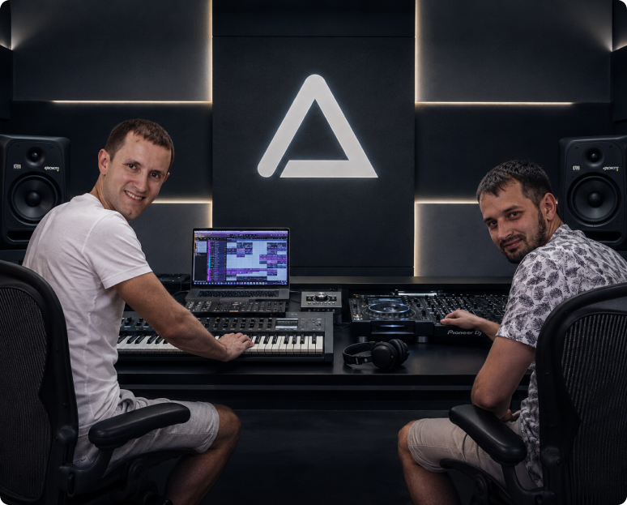
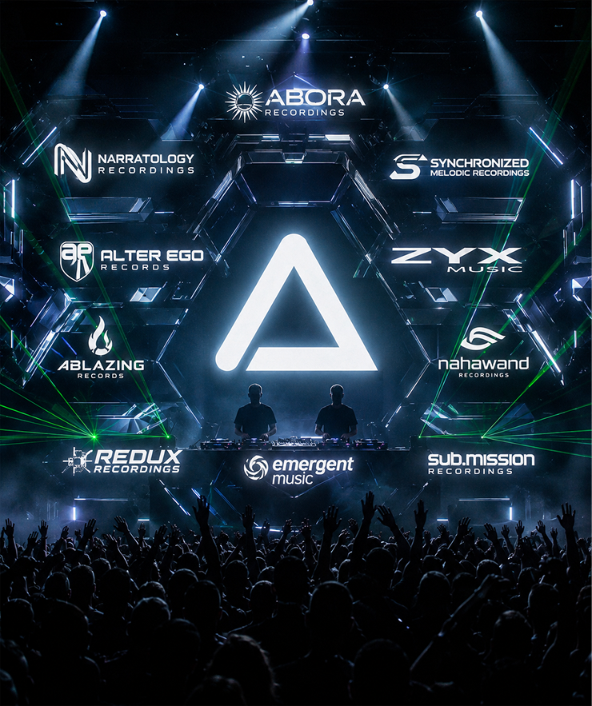
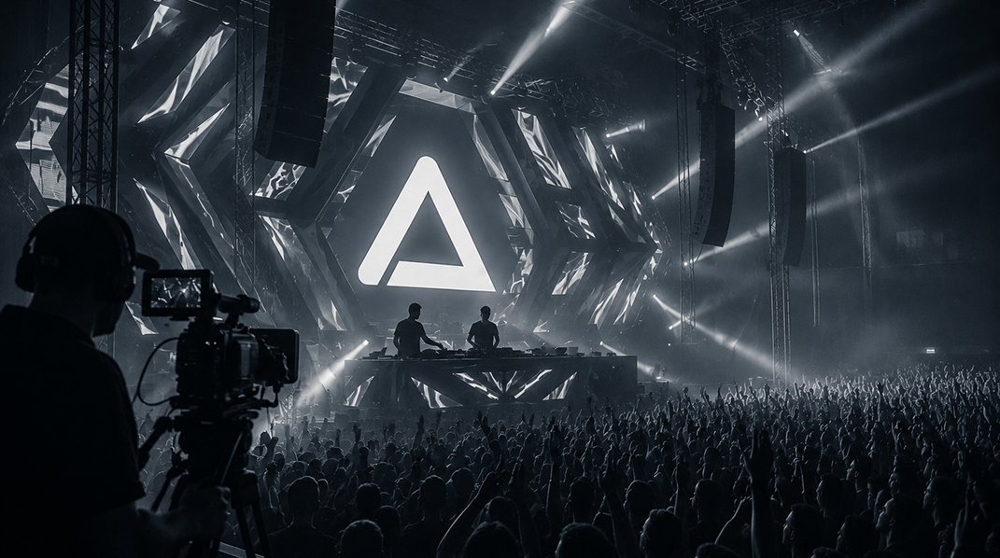
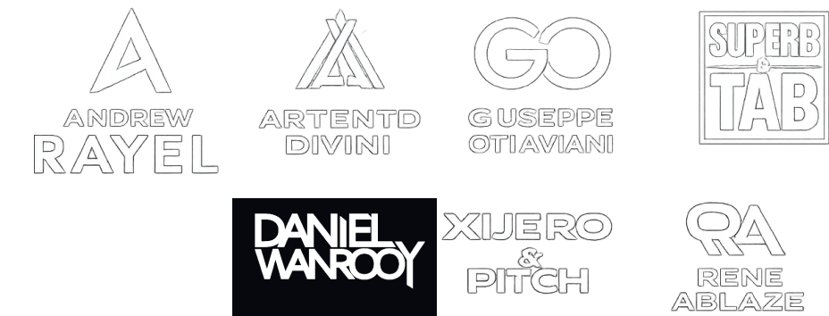

ABOUT

A.L.Y.S. is an electronic music project from Ukraine, created by Andriy Lushchak, also known as Andy Suncraft, and Yorick Serkez, also known as DJ Base-T. Built around a shared passion for melodic electronic music, the project combines emotional songwriting, atmospheric sound design, and the driving energy of modern dance music.
The sound of A.L.Y.S. moves between EDM, progressive house, electro house, progressive trance and uplifting trance with a strong focus on melody, emotion, and memorable vocal hooks. Rather than following one fixed formula, A.L.Y.S. aims to create tracks that feel both powerful on the dancefloor and meaningful to the listener. Their music often blends uplifting chord progressions, warm synth layers, energetic grooves, and carefully crafted arrangements designed for both club and radio formats.
Over time, A.L.Y.S. has developed a recognizable melodic style, shaped by years of interest in electronic dance music and trance culture. The project’s creative direction is built around contrast: energetic rhythm and emotional atmosphere, modern production and classic melodic feeling, polished sound and honest musical expression. This balance is what defines the identity of A.L.Y.S.

The project has released and worked on tracks such as “Even More, Vacation, Nostalgia, Go Run, The Next Stop, Keep on Movin, New Life, Violet Sky, Arctic Stream, Love Deep Like Ocean, High Voltage and many more. Vocals play an important role in the A.L.Y.S. sound. The project has worked with different vocalists and songwriters: Katari, Rebecca Louise Burch, Hidden Tigress, Louise Browne, bringing a human and emotional dimension into its productions. Rather than using vocals simply as an additional layer, A.L.Y.S. treats the voice as a central part of the story — something that gives the track meaning, character, and connection.
A.L.Y.S. approaches every release with strong attention to detail — from composition and arrangement to vocal processing, mixing, sound selection, and final production. The project is especially focused on making each track sound clean, warm, and professional, while keeping the emotional message intact. Whether working on an extended club mix, a radio edit, or vocal stems for release, A.L.Y.S. treats the production process as a key part of the artistic identity.
The music of A.L.Y.S. has been connected with international electronic music platforms and labels, including references to Abora / Narratology, Synchronized, Alter Ego, ZYX Music, Ablazing, Nahawand, Redux, Emergent Music, Sub.Mission and other melodic dance music communities. The project’s goal is to continue developing within the global progressive and melodic electronic scene, reaching listeners who value emotion, atmosphere, and high-quality production.


For A.L.Y.S., music is not only about sound — it is about feeling, movement, and connection. Each track is created with the intention of carrying the listener somewhere: into a memory, a dream, a moment of energy, or a sense of hope. This emotional core remains at the center of the project, no matter how the sound evolves.
With a growing catalogue, ongoing collaborations, and a clear artistic direction, A.L.Y.S. continues to build its place in the electronic music scene as a Ukrainian project driven by melody, emotion, and the desire to create music that feels both personal and universal.
Their tracks have received support from well-known artists such as: Andrew Rayel, Artento Divini, Giuseppe Ottaviani, Super8 & DJ Tab, Talla 2XLC, Daniel Wanrooy, XiJaro & Pitch, Rene Ablaze and many more.
